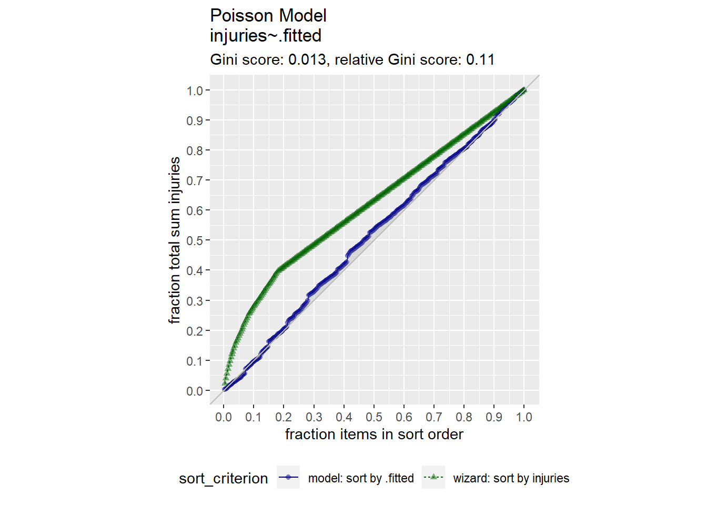
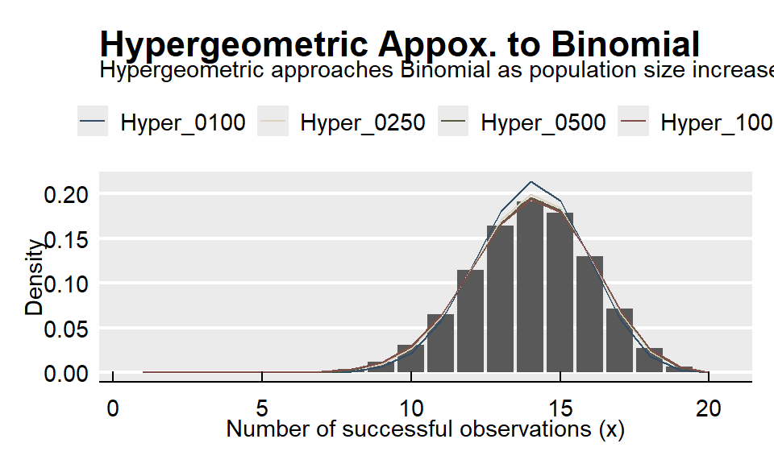
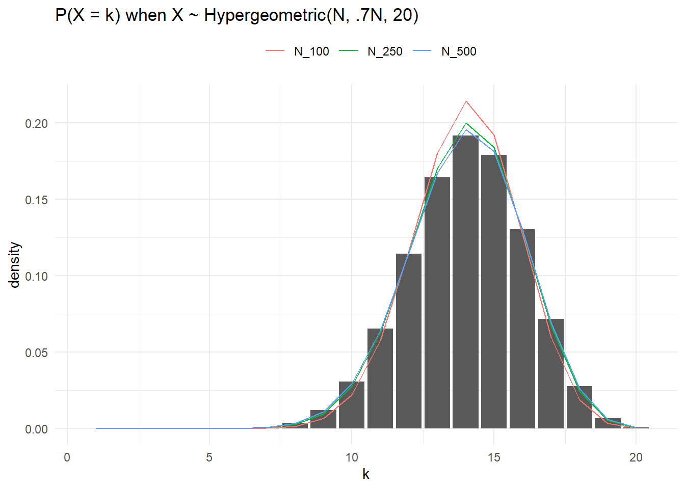
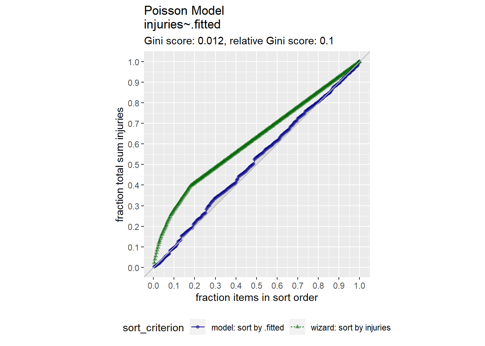
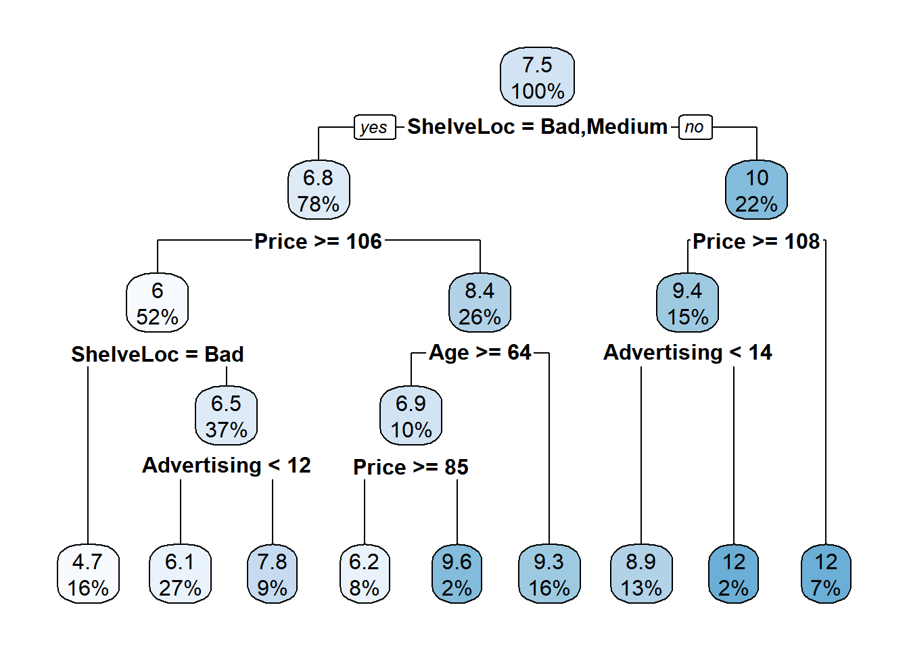
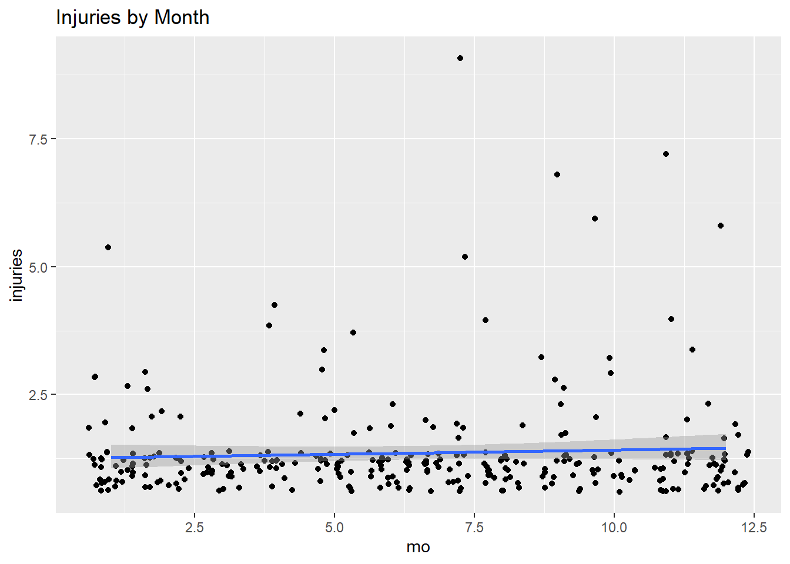
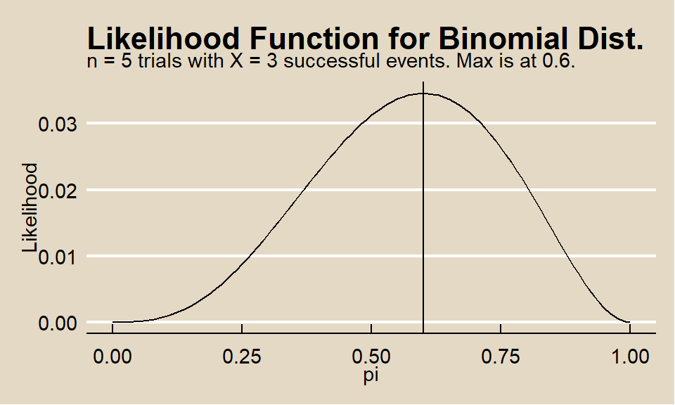

Chapter 1 Probability
1.1 Principles
Here are three rules that come up all the time.
\(Pr(A \cup B) = Pr(A)+Pr(B) - Pr(AB)\). This rule generalizes to \(Pr(A \cup B \cup C)=Pr(A)+Pr(B)+Pr(C)-Pr(AB)-Pr(AC)-Pr(BC)+Pr(ABC)\).
\(Pr(A|B) = \frac{P(AB)}{P(B)}\)
If A and B are independent, \(Pr(A \cap B) = Pr(A)Pr(B)\), and \(Pr(A|B)=Pr(A)\).
Uniform distributions on finite sample spaces often reduce to counting the elements of A and the sample space S, a process called combinatorics. Here are three important combinatorial rules.
Multiplication Rule. \(|S|=|S_1 |⋯|S_k|\).
How many outcomes are possible from a sequence of 4 coin flips and 2 rolls of a die? \(|S|=|S_1| \cdot |S_2| \dots |S_6| = 2 \cdot 2 \cdot 2 \cdot 2 \cdot 6 \cdot 6 = 288\).
How many subsets are possible from a set of n=10 elements? In each subset, each element is either included or not, so there are \(2^n = 1024\) subsets.
How many subsets are possible from a set of n=10 elements taken k at a time with replacement? Each experiment has \(n\) possible outcomes and is repeated \(k\) times, so there are \(n^k\) subsets.
Permutations. The number of ordered arrangements (permutations) of a set of \(|S|=n\) items taken \(k\) at a time without replacement has \(n(n-1) \dots (n-k+1)\) subsets because each draw is one of k experiments with decreasing number of possible outcomes.
\[_nP_k = \frac{n!}{(n-k)!}\]
Notice that if \(k=0\) then there is 1 permutation; if \(k=1\) then there are \(n\) permutations; if \(k=n\) then there are \(n!\) permutations.
How many ways can you distribute 4 jackets among 4 people? \(_nP_k = \frac{4!}{(4-4)!} = 4! = 24\)
How many ways can you distribute 4 jackets among 2 people? \(_nP_k = \frac{4!}{(4-2)!} = 12\)
Subsets. The number of unordered arrangements (combinations) of a set of \(|S|=n\) items taken \(k\) at a time without replacement has
\[_nC_k = {n \choose k} = \frac{n!}{k!(n-k)!}\]
combinations and is called the binomial coefficient. The binomial coefficient is the number of different subsets. Notice that if k=0 then there is 1 subset; if k=1 then there are n subsets; if k=n then there is 1 subset. The connection with the permutation rule is that there are \(n!/(n-k)!\) permutations and each permutation has \(k!\) permutations.
How many subsets of 7 people can be taken from a set of 12 persons? \(_{12}C_7 = {12 \choose 7} = \frac{12!}{7!(12-7)!} = 792\)
If you are dealt five cards, what is the probability of getting a “full-house” hand containing three kings and two aces (KKKAA)? \[P(F) = \frac{{4 \choose 3} {4 \choose 2}}{{52 \choose 5}}\]
Distinguishable permutations. The number of unordered arrangements (distinguishable permutations) of a set of \(|S|=n\) items in which \(n_1\) are of one type, \(n_2\) are of another type, etc., is
\[{n \choose {n_1, n_2, \dots, n_k}} = \frac{n!}{n_{1}! n_{2}! \dots n_{k}!}\]
How many ordered arrangements are there of the letters in the word PHILIPPINES? There are n=11 objects. \(|P|=n_1=3\); \(|H|=n_2=1\); \(|I|=n_3=3\); \(|L|=n_4=1\); \(|N|=n_5=1\); \(|E|=n_6=1\); \(|S|=n_7=1\).
\[{n \choose {n_1, n_2, \dots, n_k}} = \frac{11!}{3! 1! 3! 1! 1! 1! 1!} = 1,108,800\]
How many ways can a research pool of 15 subjects be divided into three equally sized test groups?
\[{n \choose {n_1, n_2, \dots, n_k}} = \frac{15!}{5! 5! 5!} = 756,756\]
1.2 Discrete Distributions
These notes rely heavily on PSU STATS 504 course notes.
The most important discrete distributions are the Binomial, Poisson, and Multinomial. Sometimes useful are the related Bernoulli, negative binomial, geometric, and hypergeometric distributions.
A discrete random variable \(X\) is described by its probability mass function \(f(x) = P(X = x)\). The set of \(x\) values for which \(f(x) > 0\) is called the support. If the distribution depends on unknown parameter(s) \(\theta\) we write it as \(f(x; \theta)\) (frequentist) or \(f(x | \theta)\) (Bayesian).
1.2.1 Bernoulli
If \(X\) is the result of a trial with two outcomes of probability \(P(X = 1) = \pi\) and \(P(X = 0) = 1 - \pi\), then \(X\) is a random variable with a Bernoulli distribution
\[f(x) = \pi^x (1 - \pi)^{1 - x}, \hspace{1cm} x \in (0, 1)\]
with \(E(X) = \pi\) and \(Var(X) = \pi(1 - \pi)\).
1.2.2 Binomial
If \(X\) is the count of successful events in \(n\) identical and independent Bernoulli trials of success probability \(\pi\), then \(X\) is a random variable with a binomial distribution \(X \sim Bin(n,\pi)\)
\[f(x;n, \pi) = \frac{n!}{x!(n-x)!} \pi^x (1-\pi)^{n-x} \hspace{1cm} x \in (0, 1, ..., n), \hspace{2mm} \pi \in [0, 1]\]
with \(E(X)=n\pi\) and \(Var(X) = n\pi(1-\pi)\).
Binomial sampling is used to model counts of one level of a categorical variable over a fixed sample size. Here is a simple analysis of data from a Binomial process. Data set dat contains frequencies of high-risk drinkers vs non-high-risk drinkers in a college survey.
##
## No Yes
## 685 630The MLE of \(\pi\) from the Binomial distribution is the sample mean.
## [1] 0.4790875Here is the binomial distribution \(f(x; \pi), \hspace{5mm} x \in [550, 700]\).
events <- round(seq(from = 550, to = 700, length = 20), 0)
density <- dbinom(x = events, prob = p, size = n)
prob <- pbinom(q = events, prob = p, size = n, lower.tail = TRUE)
df <- data.frame(events, density, prob)
ggplot(df, aes(x = factor(events))) +
# geom_col(aes(y = density)) +
geom_col(aes(y = density), fill = mf_pal()(1), alpha = 0.8) +
geom_text(
aes(label = round(density, 3), y = density + 0.001),
position = position_dodge(0.9),
size = 3,
vjust = 0
) +
geom_line(
data = df,
aes(x = as.numeric(factor(events)), y = prob/40),
color = mf_pal()(1),
size = 1) +
scale_y_continuous(sec.axis = sec_axis(~.*40, name = "Cum Prob")) +
theme_mf() +
labs(title = "PMF and CDF of Binomial Distribution",
subtitle = "Bin(1315, 0.479).",
x = "Events (x)",
y = "Density")
There are several ways to calculate a confidence interval for \(\pi\). One method is the normal approximation (Wald) interval.
\[\pi = p \pm z_{\alpha /2} \sqrt{\frac{p (1 - p)}{n}}\]
## [1] 0.4520868 0.5060882This method is easy to understand and calculate by hand, but its accuracy suffers when \(np<5\) or \(n(1-p)<5\) and it does not work at all when \(p = 0\) or \(p = 1\). Option two is the Wilson method.
\[\frac{p + \frac{z^2}{2n}}{1 + \frac{z^2}{n}} \pm \frac{z}{1 + \frac{z^2}{n}} \sqrt{\frac{p(1 - p)}{n} + \frac{z^2}{4n^2}}\]
est <- (p + (z^2)/(2*n)) / (1 + (z^2) / n)
pm <- z / (1 + (z^2)/n) * sqrt(p*(1-p)/n + (z^2) / (4*(n^2)))
est + c(-pm, pm)## [1] 0.4521869 0.5061098This is what prop.test() does when you set correct = FALSE.
##
## 1-sample proportions test without continuity correction
##
## data: x out of n, null probability 0.5
## X-squared = 2.3004, df = 1, p-value = 0.1293
## alternative hypothesis: true p is not equal to 0.5
## 95 percent confidence interval:
## 0.4521869 0.5061098
## sample estimates:
## p
## 0.4790875There is a second version of the Wilson interval that applies a “continuity correction” that aligns the “minimum coverage probability”, rather than the “average probability”, with the nominal value. I’ll need to learn what’s inside those quotations at some point.
##
## 1-sample proportions test with continuity correction
##
## data: x out of n, null probability 0.5
## X-squared = 2.2175, df = 1, p-value = 0.1365
## alternative hypothesis: true p is not equal to 0.5
## 95 percent confidence interval:
## 0.4518087 0.5064898
## sample estimates:
## p
## 0.4790875Finally, there is the Clopper-Pearson exact confidence interval. Clopper-Pearson inverts two single-tailed binomial tests at the desired alpha. This is a non-trivial calculation, so there is no easy formula to crank through. Just use the binom.test() function and pray no one asks for an explanation.
##
## Exact binomial test
##
## data: x and n
## number of successes = 630, number of trials = 1315, p-value = 0.1364
## alternative hypothesis: true probability of success is not equal to 0.5
## 95 percent confidence interval:
## 0.4517790 0.5064896
## sample estimates:
## probability of success
## 0.4790875The expected probability of no one being a high-risk drinker is \(f(0;0.479) = \frac{1315!}{0!(1315-0)!} 0.479^0 (1-0.479)^{1315-0} = 0\).
## [1] 0The expected probability of half the population being a high-risk drinker, \(f(658, 0.479)\), is impossible to write out, and slow to calculate.
## [1] 0.06455096As n increases for fixed \(\pi\), the binomial distribution approaches normal distribution \(N(n\pi, n\pi(1−\pi))\). The normal distribution is a good approximation when \(n\) is large.
## [1] 0.06450357Here are some more examples using smaller sample sizes. The probability 2 out of 10 coin flips are heads if the probability of heads is 0.3:
## [1] 0.2334744Here is a simulation from n = 10,000 random samples of size 10. rbinom() generates a random sample of numbers from the binomial distribution.
data.frame(cnt = rbinom(n = 10000, size = 10, prob = 0.3)) %>%
count(cnt) %>%
ungroup() %>%
mutate(pct = n / sum(n),
X_eq_x = cnt == 2) %>%
ggplot(aes(x = as.factor(cnt), y = n, fill = X_eq_x, label = pct)) +
geom_col(alpha = 0.8) +
scale_fill_mf() +
geom_label(aes(label = round(pct, 2)), size = 3, alpha = .6) +
theme_mf() +
theme(legend.position = "none") +
labs(title = "Binomial Distribution",
subtitle = paste0(
"P(X=2) successes in 10 trials when p = 0.3 is ",
round(dbinom(2, 10, 0.3), 4), "."
),
x = "Successes",
y = "Count",
caption = "Simulation from n = 10,000 binomial random samples.") 
What is the probability of <=2 heads in 10 coin flips where probability of heads is 0.3? The cumulative probability is the sum of the first three bars in the simulation above. Function pbinom() calculates the cumulative binomial probability.
## [1] 0.3827828What is the expected number of heads in 25 coin flips if the probability of heads is 0.3?
The expected value, \(\mu = np\), is 7.5. Here’s an empirical test from 10,000 samples.
## [1] 7.4645The variance, \(\sigma^2 = np (1 - p)\), is 5.25. Here’s an empirical test.
## [1] 5.326368Suppose X and Y are independent random variables distributed \(X \sim Bin(10, .6)\) and \(Y \sim Bin(10, .7)\). What is the probability that either variable is <=4?
Let \(P(A) = P(X<=4)\) and \(P(B) = P(Y<=4)\). Then \(P(A|B) = P(A) + P(B) - P(AB)\), and because the events are independent, \(P(AB) = P(A)P(B)\).
p_a <- pbinom(q = 4, size = 10, prob = 0.6, lower.tail = TRUE)
p_b <- pbinom(q = 4, size = 10, prob = 0.7, lower.tail = TRUE)
p_a + p_b - (p_a * p_b)## [1] 0.2057164Here’s an empirical test.
df <- data.frame(
x = rbinom(10000, 10, 0.6),
y = rbinom(10000, 10, 0.7)
)
mean(if_else(df$x <= 4 | df$y <= 4, 1, 0))## [1] 0.2095A couple other points to remember:
- The Bernoulli distribution is a special case of the binomial with \(n = 1\).
- The binomial distribution assumes independent trials. If you sample without replacement from a finite population, use the hypergeometric distribution.
1.2.3 Poission
If \(X\) is the number of successes in \(n\) (many) trials when the probability of success \(\lambda / n\) is small, then \(X\) is a random variable with a Poisson distribution \(X \sim Poisson(\lambda)\)
\[f(x;\lambda) = \frac{e^{-\lambda} \lambda^x}{x!} \hspace{1cm} x \in (0, 1, ...), \hspace{2mm} \lambda > 0\]
with \(E(X)=\lambda\) and \(Var(X) = \lambda\).
The Poisson likelihood function is
\[L(\lambda; x) = \prod_{i=1}^N f(x_i; \lambda) = \prod_{i=1}^N \frac{e^{-\lambda} \lambda^x_i}{x_i !} = \frac{e^{-n \lambda} \lambda^{\sum x_i}}{\prod x_i}.\]
The Poisson loglikelihood function is
\[l(\lambda; x) = \sum_{i=1}^N x_i \log \lambda - n \lambda.\]
One can show that the loglikelihood function is maximized at
\[\hat{\lambda} = \sum_{i=1}^N x_i / n.\]
Thus, for a Poisson sample, the MLE for \(\lambda\) is just the sample mean.
Poisson sampling is used to model counts of events that occur randomly over a fixed period of time. Here is a simple analysis of data from a Poisson process. Data set dat contains frequencies of goal counts during the first round matches of the 2002 World Cup.
## goals freq
## 1 0 23
## 2 1 37
## 3 2 20
## 4 3 11
## 5 4 2
## 6 5 1
## 7 6 0
## 8 7 0
## 9 8 1The MLE of \(\lambda\) from the Poisson distribution is the sample mean.
## [1] 1.378947The 0.95 CI is \(\lambda \pm z_{.05/2} \sqrt{\lambda / n}\)
n <- sum(dat$freq)
z <- qnorm(0.975)
se <- sqrt(lambda / n)
paste0("[", round(lambda - z*se, 2), ", ", round(lambda + z*se, 2),"]")## [1] "[1.14, 1.62]"The expected probability of scoring 2 goals in a match is \(\frac{e^{-1.38} 1.38^2}{2!} = 0.239\).
## [1] 0.2394397events <- 0:10
density <- dpois(x = events, lambda = 3)
prob <- ppois(q = events, lambda = 3, lower.tail = TRUE)
df <- data.frame(events, density, prob)
ggplot(df, aes(x = factor(events), y = density)) +
geom_col() +
geom_text(
aes(label = round(density, 3), y = density + 0.01),
position = position_dodge(0.9),
size = 3,
vjust = 0
) +
geom_line(
data = df,
aes(x = events, y = prob/4),
size = 1) +
scale_y_continuous(sec.axis = sec_axis(~.*4, name = "Cum Prob")) +
theme_mf() +
scale_fill_mf() +
labs(title = "PMF and CDF of Poisson Distribution",
subtitle = "Poisson(3).",
x = "Events (x)",
y = "Density")
The expected probability of scoring 2 to 4 goals in a match is
## [1] 0.3874391Or, using the cumulative probability distribution,
## [1] 0.3874391How well does the Poisson distribution fit the 2002 World Cup data?
dat %>%
mutate(pred = n * dpois(x = goals, lambda = lambda)) %>%
rename(obs = freq) %>%
pivot_longer(cols = -goals) %>%
ggplot(aes(x = goals, y = value, color = name)) +
geom_point() +
theme_mf() +
scale_color_mf() +
geom_smooth(se = FALSE) +
labs(
title = "Poisson Dist: Observed vs Expected",
color = "",
y = "frequencey"
)
It fits the data pretty good!
\(Poison(\lambda) \rightarrow Bin(n, \pi)\) when \(n\pi = \lambda\) and \(n \rightarrow \infty\) and \(\pi \rightarrow 0\). Because the Poisson is limit of the \(Bin(n, \pi)\), it is useful as an approximation to the binomial when \(n\) is large (\(n>=20\)) and \(\pi\) small (\(p<=0.05\)).
For example, suppose a baseball player has a p=.03 chance of hitting a homerun. What is the probability of X>=20 homeruns in 500 at-bats? This is a binomial process because the sample size is fixed.
## [1] 0.07979678But \(n\) is large and \(\pi\) is small, so the Poisson distribution will work well too.
## [1] 0.08297091What is the distribution of successes from a sample of n = 50 when the probability of success is p = .03?
n = 500
p = 0.03
x = 0:30
data.frame(
events = x,
Poisson = dpois(x = x, lambda = p * n),
Binomial = dbinom(x = x, size = n, p = p)
) %>%
pivot_longer(cols = -events) %>%
ggplot(aes(x = events, y = value, color = name)) +
geom_point() +
theme_mf() +
scale_color_mf() +
labs(title = "Poisson(15) vs. Bin(500, .03)",
subtitle = "Poisson approximation to binomial.",
x = "Events",
y = "Density",
color = "")
When the observed variance is greater than \(\lambda\) (overdispersion), the Negative Binomial distribution can be used instead of Poisson.
Suppose the probability that a drug produces a certain side effect is p = = 0.1% and n = 1,000 patients in a clinical trial receive the drug. What is the probability 0 people experience the side effect?
The expected value is np, 1. The probability of measuring 0 when the expected value is 1 is dpois(x = 0, lambda = 1000 * .001) = 0.3678794.

1.2.4 Multinomial
If \(X = (X_1, X_2, \cdots, X_k)\) are the counts of successful events in \(n\) identical and independent trials of success probabilities \(\pi = (\pi_1, \pi_2, \cdots, \pi_k)\), then \(X\) is a random variable with a multinomial distribution \(X \sim Mult(n,\pi)\)
\[f(x; n, \pi) = \frac{n!}{x_{1}! x_{2}! \cdots x_{k}!} \pi^{x_1} \pi^{x_2} \cdots \pi^{x_k} \hspace{1cm} x \in \{0, 1, ..., n \}, \hspace{2mm} \pi \in [0, 1]\]
with expected values vector \(E(X_j) = n\pi_j\) and covariance matrix
\[Var(X) = \begin{bmatrix}n\pi_{1}(1-\pi_{1}) & -n\pi_{1}\pi_{2} & \cdots & -n\pi_{1}\pi_{k}\\ -n\pi_{1}\pi_{2} & n\pi_{2}(1-\pi_{2}) & \cdots & -n\pi_{2}\pi_{k}\\ \vdots & \vdots & \ddots & \vdots\\ -n\pi_{1}\pi_{k} & -n\pi_{2}\pi_{k} & \cdots & n\pi_{k}(1-\pi_{k}) \end{bmatrix}\]
so \(Var(X_j) = n \pi_j (1 - \pi_j)\) and \(cov(X_j, X_k) = -n \pi_j \pi_k\).
The individual components of a multinomial random vector are binomial and have a binomial distribution, \(X_i = Bin(n, \pi_i)\). Binomial is a special case of multinomial for k = 2.
Suppose a city population is 20% black, 15% Hispanic, and 65% other. From a random sample of \(n = 12\) persons, what is the probability of 4 black and 8 other?
\[f(x;\pi) = \frac{12!}{4! 0! 8!} (0.20)^4 (0.15)^0 (0.65)^8 = 0.0252\]
Function dmultinom() calculates the multinomial probability.
## [1] 0.025To calculate the probability of <= 1 black, combine Hispanic and other, then sum the probability of black = 1 and black = 2.
\[f(x;\pi) = \frac{12!}{0! 12!} (0.20)^0 (0.80)^{12} + \frac{12!}{1! 11!} (0.20)^1 (0.80)^{11} = 0.2748\]
## [1] 0.271.2.5 Negative-Binomial
If \(X\) is the count of failure events ocurring prior to reaching \(r\) successful events in a sequence of Bernouli trias of success probability \(p\), then \(X\) is a random variable with a negative-binomial distribution \(X \sim NB(r, p)\). The probability of \(X = x\) failures prior to \(r\) successes is
\[f(x;r, p) = {{x + r - 1} \choose {r - 1}} p^r (1-p)^{x}.\]
with \(E(X) = r (1 - p) / p\) and \(Var(X) = r (1-p) / p^2\).
When the data has overdispersion, model the data with the negative-binomial distribution instead of Poission.
Examples
An oil company has a \(p = 0.20\) chance of striking oil when drilling a well. What is the probability the company drills \(x + r = 7\) wells to strike oil \(r = 3\) times? Note that the question is formulated as counting total events, \(x + r = 7\), so translate it to total failed events, \(x = 4\).
\[f(x;r, p) = {{4 + 3 - 1} \choose {3 - 1}} (0.20)^3 (1 - 0.20)^4 = 0.049.\]
Function dnbinom() calculates the negative-binomial probability. Parameter x equals the number of failures, \(x - r\).
## [1] 0.049The expected number of failures prior to 3 successes is \(E(X) = 3 (1 - 0.20) / 0.20 = 12\) with variance \(Var(X) = 3 (1 - 0.20) / 0.20^2 = 60\). Confirm this with a simulation from n = 10,000 random samples using rnbinom().
## [1] 12## [1] 60
1.2.6 Geometric
If \(X\) is the count of Bernoulli trials of success probability \(p\) required to achieve the first successful event, then \(X\) is a random variable with a geometric distribution \(X \sim G(p)\). The probability of \(X = x\) trials is
\[f(x; p) = p(1-p)^{x-1}.\]
with \(E(X)=\frac{{n}}{{p}}\) and \(Var(X) = \frac{(1-p)}{p^2}\). The probability of \(X<=n\) trials is
\[F(X=n) = 1 - (1-p)^n.\]
Examples
What is the probability a marketer encounters x = 3 people on the street who did not attend a sporting event before the first success if the population probability is p = 0.20?
\[f(4; 0.20) = 0.20(1-0.20)^{4-1} = 0.102.\]
Function dgeom() calculates the geometric distribution probability. Parameter x is the number of failures, not the number of trials.
## [1] 0.1data.frame(cnt = rgeom(n = 10000, prob = 0.20)) %>%
count(cnt) %>%
top_n(n = 15, wt = n) %>%
ungroup() %>%
mutate(pct = round(n / sum(n), 3),
X_eq_x = cnt == 3) %>%
ggplot(aes(x = as.factor(cnt), y = n, fill = X_eq_x, label = pct)) +
geom_col(alpha = 0.8) +
scale_fill_mf() +
geom_text(size = 3) +
theme_mf() +
theme(legend.position = "none") +
labs(title = "Distribution of trials prior to first success",
subtitle = paste("P(X = 3) | X ~ G(.2) = ", round(dgeom(2, .2), 3)),
x = "Unsuccessful trials",
y = "Count",
caption = "simulation of n = 10,000 samples from geometric dist.") 
What is the probability the marketer fails to find someone who attended a game in x <= 5 trials before finding someone who attended a game on the sixth trial when the population probability is p = 0.20?
## [1] 0.74## [1] 0.74
What is the probability the marketer fails to find someone who attended a game on x >= 5 trials before finding someone who attended a game on the next trial?
## [1] 0.26## [1] 0.26
The expected number of trials to achieve the first success is 1 / 0.20 = 5, Var(X) = (1 - 0.20) / 0.20^2 = 20?
## [1] 5## [1] 5## [1] 20## [1] 201.2.7 Hypergeometric
If \(X = k\) is the count of successful events in a sample of size \(n\) without replacement from a population of size \(N\) containing \(K\) successes, then \(X\) is a random variable with a hypergeometric distribution
\[f_X(k|N, K, n) = \frac{{{K}\choose{k}}{{N-K}\choose{n-k}}}{{N}\choose{n}}.\]
with \(E(X)=n\frac{K}{N}\) and \(Var(X) = n\frac{K}{N}\cdot\frac{N-k}{N}\cdot\frac{N-n}{N-1}\).
The formula follows from the frequency table of the possible outcomes.
| Sampled | Not Sampled | Total | |
|---|---|---|---|
| success | k | K-k | K |
| non-success | n-k | (N-K)-(n-k) | N-K |
| Total | n | N-n | N |
Here is a simple analysis of data from a hypergeometric process. What is the probability of selecting \(k = 14\) red marbles from a sample of \(n = 20\) taken from an urn containing \(K = 70\) red marbles and \(N-K = 30\) green marbles?
Function choose() returns the binomial coefficient \({{n}\choose{k}} = \frac{n!}{k!(n-k)!}\).
## [1] 0.21But of course you would never have to do it that way.
## [1] 0.21The expected value is 14 and variance is 9.73.

The hypergeometric random variable is similar to the binomial random variable except that it applies to situations of sampling without replacement from a small population. As the population size increases, sampling without replacement converges to sampling with replacement, and the hypergeometric distribution converges to the binomial. What if the total population size had been 250? 500? 1000?
p <- data.frame(x = 1:20) %>%
mutate(density = dbinom(x = 1:20, size = n, prob = K / N)) %>%
ggplot() +
geom_col(aes(x = x, y = density))
hyper <- data.frame(
x = 1:20,
N_100 = dhyper(x = 1:20, m = K*1.0, n = (N-K)*1.0, k = n),
N_250 = dhyper(x = 1:20, m = K*2.5, n = (N-K)*2.5, k = n),
N_500 = dhyper(x = 1:20, m = K*5.0, n = (N-K)*5.0, k = n)
) %>% pivot_longer(-x)
p + geom_line(data = hyper, aes(x = x, y = value, color = name)) +
labs() +
theme_minimal() +
theme(legend.position = "top") +
labs(title = "P(X = k) when X ~ Hypergeometric(N, .7N, 20)", color = "", x = "k")
1.2.8 Gamma
If \(X\) is the interval until the \(\alpha^{th}\) successful event when the average interval is \(\theta\), then \(X\) is a random variable with a gamma distribution \(X \sim \Gamma(\alpha, \theta)\). The probability of an interval of \(X = x\) is
\[f(x; \alpha, \theta) = \frac{1}{\Gamma(\alpha)\theta^\alpha}x^{\alpha-1}e^{-x/\theta}.\]
where \(\Gamma(\alpha) = (1 - \alpha)!\) with \(E(X) = \alpha \theta\) and \(Var(X) = \alpha \theta^2\).
Examples
On average, someone sends a money order once per 15 minutes (\(\theta = .25\)). What is the probability someone sends \(\alpha = 10\) money orders in less than \(x = 3\) hours?*
## [1] 0.76data.frame(x = 0:1000 / 100, prob = pgamma(q = 0:1000 / 100, shape = alpha, scale = theta, lower.tail = TRUE)) %>%
mutate(Interval = ifelse(x >= 0 & x <= 3, "0 to 3", "other")) %>%
ggplot(aes(x = x, y = prob, fill = Interval)) +
geom_area(alpha = 0.9) +
theme_mf() +
scale_fill_mf() +
labs(title = "X ~ Gam(alpha = 10, theta = .25)",
subtitle = "Probability of 10 events in X hours when the mean time to an event is .25 hours.",
x = "Interval (x)",
y = "pgamma") 
1.3 Continuous Distributions
1.3.1 Normal
Random variable \(X\) is distributed \(X \sim N(\mu, \sigma^2)\) if
\[f(X)=\frac{{1}}{{\sigma \sqrt{{2\pi}}}}e^{-.5(\frac{{x-\mu}}{{\sigma}})^2}\].
Suppose IQ scores are distributed \(X \sim N\left(100, 16^2\right)\).


pnorm(q = 114, mean = 100, sd = 16, lower.tail = TRUE) -
pnorm(q = 92, mean = 100, sd = 16, lower.tail = TRUE)
## [1] 0.5
By the central limit theorem (CLT) the binomial distribution \(X \sim B(n,p)\) approaches the normal distribution with mean \(\mu = n p\) and variance \(\sigma^2=np(1-p)\) as \(n \rightarrow \infty\). The approximation is useful when the expected number of successes and failures is at least 5, \(np>=5\) and \(n(1-p)>=5\).
Suppose a measure requires p>=50% popular to pass. A sample of n=1,000 yields x=460 approvals. What is the probability that the overall population approves, P(X)>0.5?
# Exact binomial
pbinom(q = 460, size = 1000, prob = 0.50, lower.tail = TRUE)
## [1] 0.0062
# Normal approximation
pnorm(q = 460, mean = 0.50 * 1000, sd = sqrt(1000 * 0.50 * (1 - 0.50)), lower.tail = TRUE)
## [1] 0.0057
By the central limit theorem (CLT) the Poisson distribution \(x~P(\lambda)\) approaches the normal distribution with mean \(\mu = \lambda\) and variance \(\sigma^2 = \lambda\) as \(n \rightarrow \infty\). The approximation is useful for large values of \(\lambda\).
Suppose the annual number of earthquakes registering at least 2.5 on the Richter Scale and having an epicenter within 40 miles of downtown Memphis follows a Poisson distribution with mean \(\lambda=6.5\). What is the probability that at least \(x>=9\) such earthquakes will strike next year?
# Exact Poisson
ppois(q = 9 - 1, lambda = 6.5, lower.tail = FALSE)
## [1] 0.21
# Normal approximation
pnorm(q = 9 - 0.5, mean = 6.5, sd = sqrt(6.5), lower.tail = FALSE)
## [1] 0.22
Estimate the population from the sample using the CLT. Suppose a person’s blood pressure typically measures \(160 \pm 20\) mm. If one takes n=5 blood pressure readings, what is the probability the average will be <=150?*
1.3.1.1 Shapiro-Wilk Test
The Shapiro-Wilk test is a test of whether a random variable is normally distributed. It uses test statistic
\[W = \frac{\left(\sum_{i=1}^n a_i x_{(i)}\right)^2}{\left(\sum_{(i=1)}^n x_i-\bar{x}\right)^2}\] where \(x_{(i)}\) is the ith smallest number in the sample and \(a_i\) are coefficients calculated as \(\left(m^TV^{-1}\right)/C\) where \(V\) is the covariance matrix and \(m\) and \(C\) are vector norms.
The test uses \(H_0\) of normality, so the p-value is the probability of rejecting normality. As an example, Shapiro-Wilk rejects normality for a small sample of 10 from the binomial distribution, but does not reject it from a larger sample of 30.
1.3.2 Chi-Squared
Random variable \(X\) is distributed \(X \sim \chi^2_k\) if
\[f(X)=\frac{1}{2^{k/2}\Gamma (k/2)} x^{k/2-1} e^{-x/2}\]
with \(E(X)=k\) and \(Var(X) = 2k\).
Suppose a researcher crosses tall cut-leaf tomatoes with dwarf potato-leaf tomatoes, then classifies the (n = 1,611) offspring phenotypes. The four phenotypes are expected to occur with relative frequencies 9:3:3:1. What is the probability of observing frequencies 926, 288, 293, 104?
cell_names <- c("tall cut-leaf", "tall potato-leaf", "dwarf cut-leaf", "dwarf potato-leaf")
o <- c(926, 288, 293, 104)
names(o) <- cell_names
pi <- c(9, 3, 3, 1) / (9 + 3 + 3 + 1)
e <- sum(o) * pi
names(e) <- cell_names## [1] 3## [1] 1.5## [1] 0.69Or simulate this by taking the mean of 10,000 random trials.
## [1] 0.69data.frame(x = 0:100 / 10) %>%
mutate(density = pchisq(x, df = dof, lower.tail = FALSE),
cdf = if_else(x > x2, density, as.numeric(NA))) %>%
ggplot() +
geom_line(aes(x = x, y = density)) +
geom_area(aes(x = x, y = cdf), alpha = 0.3) +
theme_minimal() +
labs(title = "P(X^2 > 1.47) when X ~ ChiSq(3)")
How large would \(X^2\) have to be to conclude the observed were not in agreement with expectations?
## [1] 7.81.4 Join Distributions
1.5 Likelihood
The likelihood function is the likelihood of a parameter \(\theta\) given an observed value of the random variable \(X\). The likelihood function is identical to the probability distribution function, except that it reverses which variable is considered fixed. E.g., the binomial probability distribution expresses the probability that \(X = x\) given the success probability \(\theta = \pi\).
\[f(x|\pi) = \frac{n!}{x!(n-x)!} \pi^x (1-\pi)^{n-x}.\]
The corresponding likelihood function expresses the probability that \(\pi = p\) given the observed value \(x\).
\[L(p|x) = \frac{n!}{x!(n-x)!} p^x (1-p)^{n-x}.\]
You usually want to know the value of \(\theta\) at the maximum of the likelihood function. When taking derivatives, any multiplicative constant is irrevelant and can be discarded. So for the binomial distribution, the likelihood function for \(\pi\) may instead be expressed as
\[L(p|x) \propto p^x (1-p)^{n-x}\]
Calculating the maximum is usually simplified using the log-likelihood, \(l(\theta|x) = \log L(\theta|x)\). For the binomial distribution, \(l(p|x) = x \log p + (n - x) \log (1 - p)\). Frequently you derive loglikelihood from a sample. The overall likelihood is the product of the individual likelihoods, and the overall loglikelihood is the log of the overall likelihood.
\[l(\theta|x) = \log \prod_{i=1}^n f(x_i|\theta)\]
Here are plots of the binomial log-likelihood of \(pi\) for several values of \(X\) from a sample of size \(n = 5\).

As the total sample size \(n\) grows, the loglikelihood function becomes more sharply peaked around its maximum, and becomes nearly quadratic (i.e. a parabola, if there is a single parameter). Here is the same plot with \(n = 500\).

The value of \(\theta\) that maximizes \(l\) (and \(L\)) is the maximum-likelihood estimator (MLE) of \(\theta\), \(\hat{\theta}\). E.g., suppose you have an experiment of \(n = 5\) Bernoulli trials \(\left(X \sim Bin(5, \pi) \right)\) with and \(X = 3\) successful events. A plot of \(L(p|x) = p^3(1 - p)^2\) shows the MLE is at \(p = 0.6\).

This approach is called maximum-likelihood estimation. MLE usually involves setting the derivatives to zero and solving for \(theta\).